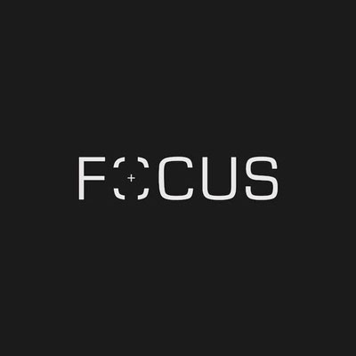
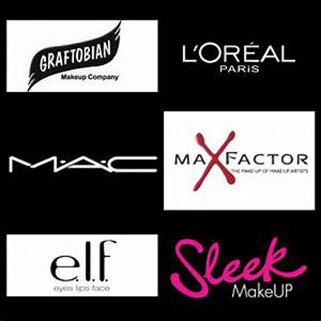
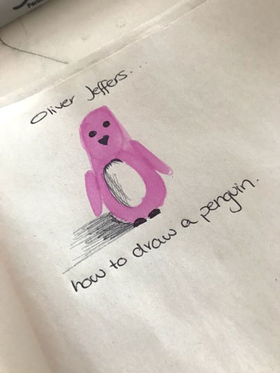
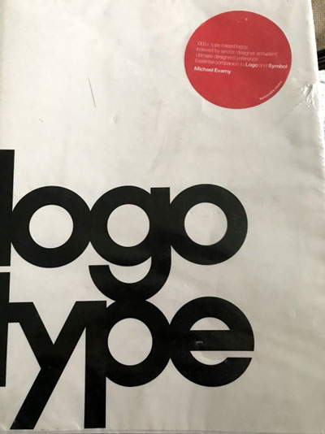
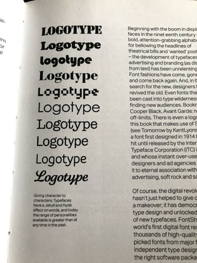
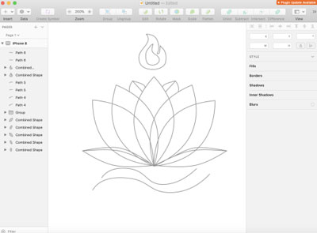
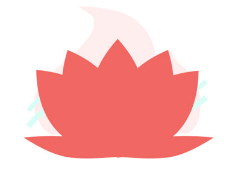
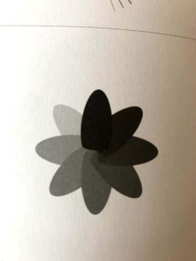
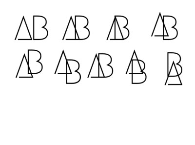
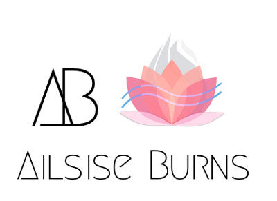

IXD 103
Work posted on my Tumblr page from IXD 103 and lecture notes
This repository is created for the purpose of organising my lecture notes and tumblr posts for IXD 103, so that it is easy to find sections in my work and the research I used to support my work.
Week 01- tutorial notes
- Managing oneself- Peter F Ducker
- Personal Brand 30%
- Portfolio website 30%
- Research, discovery and supporting website 40%
- Monogram
- Wordmark
- Visual Mark
- Brand guidelines
- Portfolio website
- fivesimplesteps.com
Instgram Research
On Monday we were introduced to IXD103 we were told what this semester would consist of, and what to expect from our modules. I decided to do some research into monograms due to it being covered next Monday, I found this page on Instagram and really liked the work, I chose several pieces that stood out to me, which I will discuss below.

This is the first piece that really stood out to me, mainly because the letter A is in it and I will need inspiration related to my own name to give me some ideas, however it was very hard to miss due to the bold lines and flow of the monogram, making an incomplete triangle.

I really liked this piece, again because A is featured, but also how the thickness of the lines aren’t the same in both ‘A’s making the incomplete ‘A’ seem like it is actually behind the first one. I think the simplicity gives it an elegant clean finish.

This monogram stood out to me a lot, as neither letters are finished, yet it is instantly recognisable what they are, I really like how the font chose allows the ‘C’ to easily flow into the ‘R’ and how they give a very professional finish.
This Monogram stood out due to the minimalistic approach taken to create it, the thick stroke lines ensure that it is clear what the letters are as well
Further Research
Adham Dannaway
When researching Interaction designers to look at I came across Adham Dannaway, I decided to look further into his website and discuss why I liked it so much. When I first clicked on to his website was a really eye-catching home page.

The home page is really interactive, it allows you to see two sides of Adham, literally! When you direct your mouse to the left, it expands the ‘designer’ part of Adham, and when you direct the mouse to the left side it expands the ‘coder’ side of him, he explains that he is a UI/UX designer passionate with ‘beautiful and functional user experiences’ and well as being a front end developer ‘who focuses on writing clean, elegant and efficient code. I really like this interactive home page, and it really stood out to me out of all the artists. The social media links are located in the top right hand corner, which is unusual for websites as they are typically in the footer, however it is more beneficial here as they tend to be overlooked at the bottom, here they catch user’s attention which means we are more likely to click and visit his external links.

The ‘portfolio’ section is laid out simplistically, with small boxes for different portfolio projects, with a main image from each project, each box has a title and a subtitle, it is professional and minimalistic with a clean finish.

In the ‘featured’ section this clean minimal approach is consistent, even if the content isn’t, creating a nice flow throughout the website, but ensuring that the layout is appropriate for the content.

The ‘about me’ section is similar to the ‘featured in’ section however it is appropriate for the content.

The ‘Blog’ section differs from the others with more content in the page, it generally consisted of a title, image and description, it was more content heavy, however it was appropriate for the purpose.
I really liked the layout, and clean minimalist approach of Adham’s website, there was a really nice flow and consistency from the differing pages, allowing it to be professional, yet showing his creative side through imagery and his different approaches
Jeffery Zeldman
I decided to choose Jeffery Zeldman as my second Interaction Designer, as his website is SO different to Adham’s.
His home page is vibrant and colourful, with block colours and a letter-like introduction from Jeffery himself. He is known for talent in the industry, as he explains himself being the smartest and most talented designers, coders and strategists he knows. His page is more content heavy as you scroll down.
This is at the end of the page after a section for his books and publications, allowing you to access a lot without even leaving the homepage, Jeffery uses very bold colours instead of going for minimal white backgrounds.
His page on ‘work’ is a lot more simple with a cleaner layout, yet still quite text heavy with detailed descriptions.

The about page uses vibrant colours, consistent with the home page and has multiple black/white images of the team, it is a lot less content heavy.
In my own opinion I don’t actually like the bold colours, as they feel very harsh to the eye, and can be distracting from the content. However the approach is different to other artists I have been looking at.
Mike Kus
For my third interaction designer I decided to look at Mike Kus, I really liked his website because of how it was laid out, and how the there was more imagery then text on the home page.

It is really illustrative and a different approach to standard websites. The different image blocks change when the mouse is hovering over the image, and shows text as to what is within the link.

I think the fact the image changes to something different makes it really interesting and the change is still consistent with the theme of the image.
Once clicked into, a screen slides from the right hand side, with content. The content is laid out cleanly and is very minimal, without too much going on. There are no distractions for the user, meaning they can concentrate on the content.


The ‘About’ page has a slightly different layout to the others with a large image at the top and no title, or sub headings. There is a consistency throughout the pages, however, this stands out as the content within is different to his projects.
I really like the clean illustrative approach that Mike takes, and how there is a nice flow throughout the different projects and tabs. The placement of his name and links are at the top of the screen in a header. The content is laid out professionally and creatively. I really like how interactive the website is with the changing imagery.
!--------WEEK TWO------!Week 02- tutorial notes
- Creating Monograms
- City of Melbourne bechance
- Does it work really small
- Patterns from the monograms.-visual assets
- Background to the website?
- Portfolio site incorporates brand.
- Documentation- business cards
- Brand is used continuously through assets
- Stadion slaski
- On bags/badges
- Formula one logo
- Itv new and old
- Kano
- Colour Theory
- Monochromatic
- Triad
- Complimentary
- Hex codes
- Cultural conotations
- Colours in culture-mean different things, western/eastern
- Finalise monogram
- choose 3/4-digitise
- moo cards
- Week 4- good time to reflect
- This week=wordmarks
- This afternoon- Mono update-firm but fair
- This week= looking at alot of type
- city of melbourne-mono goes with word mark
- different positioning
- Different mediums eg business cards
- Word Marks
- Lettering+Kerntypes
- Logotype-book
- Typography is centre peice
- associate different words with typefaces - vice versa
- Fashion Industry-brilliant for wordmarks
- This week=about type
- Word Mark and Monogram-should work together
- Choose appropriate type for my personality
- Some adjectives to describe me -*BRAINSTORM*
- Few typefaces to suit that adjective
- All typefaces look the same eg Google/air bnb- losing their character
- Type changes character
- Make list of type and go through and evaluate suitability
- Script/Calligraphy eg coca-cola/disney/sharpie
- Typographic eg Facebook/Braun/Netflix/Fed Ex/Amazon/Barneys new york/Pencil
- Could Possibly animate
- Lots of variation of positioning
- Yorrick Harrison-like the type
- custom type- Disney/ford/Ray Ban- signatures
- A Twist- one noticable considered differents-glasses logo/showtime/muscular dystrophy
- Kerning LetterForms
- font family- different fonts for different purposes
- Typekit practice
- monogram digitisation
- Wordmark research
- Wordmark sketches
- Word mark refinements-sketch/illustrator
- Visual Design
- Increase the speed of outputs-week 07=group critique
- Monogram/Wordmark/Visual Mark/ start of brand guidlines
- Visual Identity
- Railway/woolmark/Nike/Addidas
- Visual mark work with Monogram/Wordmark
- MailChimp
- Look at brands that work with wordmarks
- Tinybooks
- Look at monograms,wordmarks etc in one artboard to choose the best version
- Dropbox/slack
- Pentogram
- Look at Colour Pallettes
- Mockups of different brands in different situations
- Tim wooders-rooster
- Tim Van Damme
- Sketchnoting- teaching you to draw/make notes quickly/think visually
- Sunni Brown-TedTalk
- Stephen Johnston art
- Ed Emberly-drawing basics
- Mike Rohde:sketchnoting
- Muji Pens
- ABT TomBo pen-N75
- Sketchnoting-idea factory
- ADMCI
- 4/5 ideas- on paper-refine
- Visual Mark research
- Visual Mark- sketch
- Visual mark refinement
- The craft of words
- Next week: monogram/wordmark/visual marque
- Nicely said - Nicole Femnton
- Craft of words
- Voice and tone eg professioal or playful
- Mailchimp guidelines
- Quote from Oliver Reichenstein
- get better at commuinication and what I want to say
- Macrocopy- establishes tone/personality
- Microcopy- reinforces tone/satisfies personality
- words=very important
- flickr became serious not fun
- dropbox- grab a snickers
- Causing intentional delight
- Defining where organisation sits on the continium- can help shape the types of words and use tone of voice- change- 1st/3rd person
- Jessica Hische- serious but not too much, third person/ her brand resembles her work/ her about section = 1st person-changing the tone/ even her url reinforces the brand
- GOV.UK- clear and simplstic/goverment language gone=simple now/ content style guide.
- Hewitt denim- talk about product as its superior/ make an investment- not a purcahse but an investment/ story-voice tone reaffirms brand- your buying a story/ thing about tone- now you want to come acorss
- Who inspires you?
- How do they talk about themselves?
- Designers website+structure/organised
- Dan Edwards- call to action buttons
- Laura Kalbag
- Twitter- colour and spacing
- Are you a smart car or Mercedes?
- Brand Guidelines- voice and tone
- Style Guidelines, Corporate Brandlines etc.
- Corporate Identity - Analogue/Digital
- Snapchat/UU/HM Government
- Guidelines and manuels
- NASA
- Tools- Pattern Library/Style Tiles/Element Collages/Style Guides
- BBC- BBC gel- actual components- html/css
- Yelp- Case study-Future learn
- Reusing components
- Allows you to produce really easily+quickly
- Mainly consists of HTML and CSS
- Just visual - not components- pdf/jpeg
- Just visual image
- Logo/placements
- Possible colour/fonts/headlines/body copies/buttons/images
- Give colour hex code/typeface etc
- Dan Mall
- The win without pitching manifesto
- Visual Representation of how product could look
- Brand- buttons/side menus/colour palettes etc
- Little Thunder
- Dark/Light buttons
- Quote from Jordan Moore- style guide github
- comment throughout HTML
- Brand
- Typography
- Colour
- Consistency
- Personality
- Mission
- Vision
- Brand Personality
- Core Values- Design- Swiss/Bauhaus etc.
- Brand Story
- Voice- 1st/3rd/serious?
- Logo- Monogram/Wordmark/Visual Marque
- Colour Palettes 1st and sub
- Typography- what is your back up?
- Imagery style-colours
- Black/White
- Colour
- Layout
- Positioning
- How to use it- How not to
- Logo pairing-in circles etc.
- Main Colours
- Substitute Palette
- Print?Screen?
- Panetone code/hex/RGB/CYMK
- 1st Type
- 2nd back up
- Different types
- Layout style
- Dos and Don'ts
- Colour picking
- 1st?/3rd?
- Layouts
- Business cards
- Cars
- Website Layouts?
- Main Heading
- Sub Heading
- Sub title
- Content
- Bold/Italic
- Enlarged parts of wordmark/Monogram- use it as a layout
- Rules of thumb- how to use brand
- First explain what the brandlines are
- Include table of contents
- Brand spirit-vision-purpose
- Brand Values
- What I value etc.
- Brand voice- does it change?
- Tone
- Why you do it that way
- Show bad examples and why they are
- Who am I/ Whats my tone
- Character/Quality etc.
- Isolation areas?- considered layout
- Megrim- combine AB to create new?
- Make the Wordmark more spread out
- Designing Brand Identity- Book
- The Future beyond Brands - Love marks
- Creates Values
- Emotion
- Kevin Roberts- Love mark diagram
- To create a good love mark- tap into dreams- myths- icons
- Intimacy- get up close and personal- connect w/ people eg. Apple
- Its the experience
- Consider touchpoints
- The Squirrel and the Cow
- The Content mix
- Broadcast Programming
- You are a channel
- Wez- CSS grid youtube tutorials
- Input-Synthesis-Output
- Keep Tumblr going
- Consider the mix- select a few
- Pacing- vary the length
- Sustain it
- Written Word
- Things you make and share
- Projects you contribute to
- Could create newsletter via Mailchimp
- Work on Portfolios
- Consider portfolio
- Submission - 9th May @ 12pm
- One post on tumblr with links to Monogram/Wordmark/Visual Marque/Brand Guidelines
- Portfolio site- online
- Same for App and Infographic
- Tumblr=40% of both modules- keep up to date!
- IXD103 and IXD104- one post with links
Monogram Mood Board
I really like this letter, it is not a monogram, however it concentrates on form rather than the letter itself, yet I can still recognise that it is an ‘F’.

I really like how this is using dots to create the letters, and how it adds texture to the word.

I found this in HMV it is a foo fighter album cover, I really like how it looks like an abstract shape rather than to ‘F’s rotated differently.

I personally really love Celtic designs and the patterns and I would love to incorporate and experiment with it within the letters or use it as a form.

I like this pattern affect that creates movement within the lines from the overlapping, I’d really like to see if I could recreate this some with within my own monograms.
Further Monogram research-Pinterest
I decided to look at Pinterest artists for inspiration on Monograms, I created this mood board as a digital form of brainstorming things I liked and what I could use or incorporate in my experimenting. Below I will discuss some of my favourites.

I really like this piece as the flat clean lines of the ‘S’ and ‘T’ combined to create a broken up form, it is simple yet effective.

I’ve chose this because I like how it gives the impression of a 3D ‘C’ even though it is just a build of lines.

I like the clean straight lines and how it is easily recognisable as an ‘E’ but looks nothing like the letter, it is more based on form than actual lettering.

I think the placement caught my eye, and how the artist chose to use size to create a simple Monogram that is professional and minimal. I also like the curved loop at the bottom of the ‘M’ it adds feminine touch to the Monogram.

I chose this Monogram as I think the broken lines are effective, as our eyes our trained to fill in the gaps, I also think how the ‘C’ is incorporated into the ‘A’ to finish the line is effective and different.
I really liked this design, because the ‘K’ and ‘A’ create a shape or small pattern and don’t look like standard lettering.

I’ve chosen this design because of how the designer subtly incorporates the ‘B’ into the D.
I would like to use and incorporate some of the ideas from these designs, and create an original and creative monogram that represents my own initials.
Physical Mood Board
I decided to create a mood board based of fonts that I like, forms that I like and a colour scheme I might use for my monograms, I found it quite hard to find different fonts that I really liked, part of the reason for colour and form being incorporated.
Monograms, Monograms and more Monograms...

I decided to create a wide rand of monograms to help try get the best possible monogram for my initials. the first circled monogram in the top row, I particularly like it because of its simplicity and how clean it is, the monogram in the bottom row I really like because of how diverse it is compared to other monograms you see these days.

There are several monograms that I like on this page the first one I like because it is really simple but eye-catching, another way to approach lettering instead of just standard letter, more like forms. The second monogram in the top row I think is quite quirky, as it uses the @ symbol and creates a ‘b’, something different to usual monograms, I also think its a funny take due to the fact that I’m doing interaction design. Lastly, I like the abstract monogram that concentrates the essence of the letter, but not using actual letters at all.
On my third page of monograms I chose the first one, as I think it is a creative way to represent A and B, the b is represent using two dots, however I need feedback as to whether it works of is too complex. I like the second highlighted monogram because of it being to clean and unfinished, however I do feel it might be too similar to existing work out there.
The first highlighted monogram on the top row is quite feminine, I like the curved loop and the unfinished B. I like the second ‘A’’B’ monogram due to its simple unfinished look, however I don’t think it works for the ‘B’. The first monogram in the second row, allowed me to be more abstract however creating a different style A instead of a triangle, although it might not be clear what the letters are. The second highlighted monogram in the second row is a different take on the previous monogram with a different B instead of two circles. The last highlight monogram I think is different due to its placement and how it looks stretched, I don’t think I would use it as my monogram but I did like it.
!--------WEEK THREE------!Week 03- tutorial notes
Tumblr posts
Digital Moodboard
Even though I discussed these pieces, and had a link to my Pinterest board, I thought that I would make a digital moodpboard of my favour pieces.
The type of artist I want to be

So I never got round to uploading what we did on the first day back of week 01, I know its a bit late, but better late than never I suppose! So we discussed about what type of artist WE all wanted to be and how we wanted to project ourselves to the public, Kyle suggested a ‘lift pitch’ so we had to imagine we only had 10 seconds to tell a complete stranger who we are/want to be, and that we should use this approach to our twitter bios/ Tumblr bios and instagram bios. To be honest I’m not sure where I am with that, but I do know that I like designing User interfaces, as I think it would be an enjoyable career, but, I do know that out of everything I just want to be the best that I can whether that be in my craft of in my career, I want to be able to compare myself to someone I was 5 years ago and I want to know that I have improved somehow. I also wanted to bring my own personality across in bio so people don’t think I’m forever glued to a screen. the above picture is what is wrote in my bio, and what describe me the best at this moment in time.
Logo by Michael Evamy
I never got the chance before to upload some of my inspiration for the different fonts for my monograms, I borrowed the book Logo by Michael Evamy, it was really good to see some of the different forms and fonts.
I highlighted these three as I really like the fonts used, and the style of smooth clean lines that flow really well together.
I chose this font to look at because I like the curved affects at the tips of the ‘J’, ‘R’ and ‘a’ as well as the way the letters flow into one another.
I really like the very straight, clean and modular sort of essence from this typeface.
I used this as direct inspiration for my own monogram how to use just black shapes to create a monogram, however these look more like a typeface than what my own looks like.
I really like the ‘B’ in this typeface, however I didn’t like how they didnt carry that out throughout the whole typeface.
I really like the curved lettering in this typeface. however I don’t personally like the ‘m’.
Name Research

I decided I would look into the meaning of my Name, Ailsise Burns, I found that Ailsise(Alisha/Alicia) has German/indian and French ties and means noble/kind as well as protected by God, due to its ties to Elijah the bible. My name is spelt in old Irish. Burns, However is an old Scottish clan name, which was used to describe someone who lived near a burn/stream. I think it is quite fitting, as my favourite colour is Blue, a colour I would have liked to incorporate into my Monogram somehow, now I can do so with a meaning behind it.
Jessica Hische and Daily Drop Cap
So I decided to take the approach of looking at Jessica Hische’s Daily Drop Cap challenge

I decided to focus on the A and B, to see if there was any inspiration due to the fact they’re the letters im focusing on.

I really like this ‘A’ due to the curvature and the how it almost looks like a musical note, or something ornamental.

I chose this ‘B’ because, again, the curvature but also because of the ‘leafy’ appearance, which suits the colour.
I like this ‘B’ because of the vertical line looks slightly like a podium, making the ‘B’ look like a structure not a letter.
I really like this ‘B’ mainly for the fact that its simple and effective.
Feedback
So I received some feedback from Kyle and a few classmates in a group critique, I found it really constructive, as I got some feedback saying some of the ideas that I personally liked but didn’t think worked, actually do work! Obviously after some refinement though.


So I highlighted the pieces in red from the pieces that stood out to Kyle and others, and they will be the ones I will focus on, however the pieces highlighted in blue are some of my personal favourites, that I might try to work with and see if they can be improved to the other monograms standard.I really like my pieces however, I feel I haven’t got all of the monograms out of my system just yet, some this week I will continue to try some more ideas until I can’t do any more! They will probably get a little bit more abstract but please don’t judge, just experimenting!
V and A Mueseum Monogram

So this Monogram was created for the V&A museum in 1989 by Alan Fletcher. It is simple and elegant and incorporates the ampersand to fill in the missing crossbar on the A is smart and innovative. I really like the piece, and I incorporated it slightly to some of my own pieces due to it being such an influential piece.
Monograms...AGAIN!
So it turned out that I had a few more monograms left in me, definitely think id struggle to create anymore though! None of these really stood out to me compared to my previous monograms, this was more to do with pushing my limits to see what else I could create? I probably won’t be uploading any new monograms but I will be refining some previous designs!
Monogram Development-1


So I decided to develop some of my monograms, using scaling, and appropriate proportions to see if the monogram works, this is the first Monogram I worked on. I did struggle a lot with this one, especially with the B, first I didn’t want it to look like a 3 therefore I included a line to make it recognisable, I then struggled a lot with the sizing and proportions of the curves on the B. I feel that it does work to a point, but I would really like to get some feedback from Kyle and a few of my classmates to see their thoughts and ideas. My sketches are very rough and messy but that’s just so I can get an idea of what works and what doesn’t, a lot of trial and error on my part.
Monogram Development-2
This was the second choice from my feedback session that seemed to be popular, but perhaps more so as a visual mark more so than an actual Monogram, I struggled a lot with this one, as I wanted to emphasis curvature, like cartoon hearts do, however it was difficult to find a balance between curvature and proportions, also it would be awkward as a monogram as it may take up to much room when being placed onto work or in headers, which isn’t practical. Furthermore, It might not be recognisable as a heart without the guidelines of the heart.
Monogram Development-3


Similarly to the first monogram, I struggled ALOT with this one, but I am SO happy with the outcome. When creating different monograms I didn’t really like this one, and didn’t take much interest in it, the reason for the development was because it was one of the chosen favourites when getting feedback, However, seeing it with proper scaling and proportions I REALLY REALLY like it! It is a really clean sleek design, and quite ‘tom-boyish’ which suits my personality. I struggled a lot with the curves in the B and I feel that may also be a problem when it comes to doing it justice on sketch/illustrator when digitising it. I also included the vertical line in the B however cut it short, as from influences when doing research I really like the gaps in monograms which make them look unfinished, but I think it works well here due to the fact it makes it look very modern with a good flow through it. I also struggling with the scale for the A to make it work with the B, however I feel the finished look works really well!
Monogram Development-4

I didn’t really take a lot of images when devloping this Monograms, because there isn’t a whole lot to it, I think is is very simple, but may be too similar to existing monograms out their, furthermore, the B could be possibly mistaken for an R, I’m not a huge fan of this monogram compared to others, however I would like to try to get some more feedback on it.
Monogram Development-5


The following posts including this one will include my personal choices of favourite Monograms, and developing them to see if they can be improved upon, I wanted to do this, because if after feedback the first four don’t work, I would like to have some other developed monograms for the group to look at.I adjusted this monogram very slightly such as removing the unnecessary lines and making the A more straight and parallel to the B. I do like this monogram, due to the fact it looks more like a form, more so than lettering, however I can see why some people favoured other monograms as this may be too simplistic and may not be practical for the purposes.
Monogram Development-6
I chose to develop this monogram, as it is one of my own personal favourites due to how abstract it is, I know it probably won’t work practically due to the fact some people may not be able to recognise that this is an ‘a’ and the two dots symbolise the B, but I think it is different and unique.
Monogram Development-7


I chose to develop this Monogram, as I really like the curvature and simplicity of it. I enjoyed developing it further, as it just seemed to work well, but it wasn’t one of the monograms that was noticed when the group was choosing, some hopefully after some development the others might like it better, however I will base my actions on the feedback after tomorrows session, as others may think other monograms are stronger.
Monogram Development-8


Similar to monogram 6, I like this monogram due to the fact of how abstract it is, it is simple and uses shapes to represent the A and B in my initials, I feel there is a possibility it could work as a visual mark, due to it being quite versatile, but again, it wasn’t one of the stronger Monograms that the group gave feedback on, however it is one of my personal favourites, which is why I wanted to experiment with it.
Monograms go digital
So I found this process extremely frustrating! I enjoy working on sketch, however found it incredibly hard to create a B! I have very little experience on illustrator also, so it was just as frustrating, these are first drafts and will be subject to criticism tomorrow, but PLEASE sympathise for me because I have been nearly pulling my hair out!!
So I chose to keep it sort of simple, with this first monogram to go digital is Monogram 3- one of my favourites, but trying to do it justice was incredibly hard!
So after a long period of time I got this! I feel the curves on the B definitely need improvement, however I want to document the full coverage of my process so here it is!
I then tried to add some colour, after moodboarding some colours(will be uploaded later!) and after some research into the name Burns I chose blue(my favourite colour) I really like this shade as it is really calming and not too harsh on the eye. However I might be the silliest person ever but I did not know how to add a fill colour so it was outline only! But I really like this outline however I would like to experiment with the colours.

I did add this into sketch, to see if I could add a fill, but as you can see it didn’t go well..

However I did find this blue tool, which I feel really lifts the monogram and brings it to another level! It reeky stands out, but again I need some feedback as I could be wrong..


So I decided to create this on illustrator, however I feel like I might have been using the wrong tool to create the A, I just don’t think this does it justice, and it doesn’t seem to work digitally as it did on paper, but then again thats just my opinion!
So I decided to take this digital, as I thought it might work better on screen, but again I really don’t think it did it justice, while creating it I straightened the bottom part of the B more like the version on paper, but it looked to much like a R, then when I made it more round it still didn’t work well.

I decided a touch of colour might help, I decided to go with this coral pink colour, I really liked this colour when moodboarding, and think it might work really well with the blue colours I have been introducing in the previous monograms.

Lastly, similar to the above monogram I chose to take this digital to see if it worked well on the screen, I feel the B could definitely be improved, however I feel it was definitely more successful than the one previous, again I used this coral pink colour, to see it would work well, and it gave a very feminine feel to the monogram.


Out of the Monograms I chose to digitally create tonight, I feel the first Monogram was definitely the most successful, after some refinement and feedback I feel like it may be my final choice. I felt the third Monogram was definitely the weak link, it just doesn’t seem to work well on paper of on screen at the minute, and might be just to simplistic and is very link current monograms out there.
Mini Moodboards!
So after my first draft, I realised it didn’t really meet the brief! So using some of the cutouts of the previous and including some new ones I created an A5 size moodpboard, with text only, I felt this one worked better and I prefer all the text in this one, it may be small- but as people say- all good things come it small packages!
I didn’t want to waste all of the work I did on the A3 moodboard on colour, and due to me introducing some more colour into my monograms, I chose to use the cut outs from the previous, and cut out the two main sections I would like to use as colour schemes, with the blues/greys/greens and corals/pinks and purples to create another mini moodboard on A5!
Moo Card
Kyle suggested to look at Moo Cards, I thought this was a great idea as it will determine will my monogram work practically, I did a rough version, the details in it are not correct, and I think if I was creating a final version I would look at a white background so the monogram looked cleaner.


I think the front of the card something more could be improved upon to make it more unique.
City Of Melbourne
I wanted to look at the city of Melbourne logo, as it is a great example as to how to create a versatile design that can fit many different purposes. It has different colours, designs and colours, yet the logo remains consistent throughout.

The word mark and logo work together in many different ways, making it really practical and unique. It is easily recognisable, and can be adapted to suit the needs of documentation and different mediums.
Formula 1- New and Old
I wanted to highlight the Formula 1 logos, I wasn’t aware that they had updated to a newer logo, however I feel the older one is a lot better. It is clear that the previous logo had a lot of consideration and there is a small twist that usually goes unnoticed- between the ‘F’ and the red lines is a one.
A lot of people don’t notice it, as it is an absence of colour and clear lines, but it works so well! I do like the new version due to the f resembling a race track, however, I don’t feel like they should have changed something that worked so well!
ITV Monogram- New and Old
I want to evaluate the Itv monograms-both new and old. I really like this version of it due to the mixing of the original colours create new colours, I thought this was a really smart and considered approach to the monogram.

This is the newer updated version, I feel it doesn’t have the same considered approach as the previous, however I do like the colour scheme(due to blue being my favourite) but, I don’t think alot of thought went into the updated version.

Week 04- tutorial notes
Tasks:
Tumblr posts
What is a wordmark
A word mark is a text-only form of logos for businesses, who have a distinct wordmark recognisable to them. They can act as a ‘stand-alone’ logo or accompaning a a monogram or a visual mark. Word marks can also be referred to as a logotype. fonts and letter types are incredibly important in the decision making of a business, as it needs to capture the characteristics of the companies personality and how they want to come across to their perspective customers, furthermore, it must suit their target audience, such as a fun font for children’s entertainer or a elegant and professional font for a solicitors.
What is a wordmark
A Moodboard based on word marks and fonts that I like and may incorporate in my work and influence my outcome.
So I decided the best way to think of different ways to brainstorm is to look at work that is already out there, hence the moodboard. I really like Pinterest for this purpose as it incorporates all styles and allows you to look at small artists people overlook.
I will be discussing some of my favourites below and telling you why it caught my eye or why I like it so much.
This is one of the first monograms to catch my eye, I think because it is similar to the style of work I was looking at for my monograms and I really like the parallel lines in the I and L and how it it creates I nice flow with the A and V and how they all affect the R. I also like the simplicity and how it is clear that consideration when into the designing of this wordmark.
This word mark caught my eye at how one simple minor change really made a difference in the design, and relates to the word. The dot above the I, which is usually considerably smaller has been made bigger to relate back to the word- oversize. I thought the change was minor, but a very clever one.

I really love this word mark, it is so simply and doesn’t go overboard or make it too complex. They simply related the design back to the word- octopus, and put some lines to the right side of the O to make it appear like an octopus swimming.
I don’t know if I liked this so much because I love cameras and taking images, or because of how one small tweak can add so much personality into a word mark- they simply added the focus symbol which appear on cameras to relate to the word focus- something so simple yet makes such an impact, I also think the font really suits the word as well, it is simple, and professional.
As an outright cat lover, I love love love this word mark, it uses absence of type to create an outline of a cat walking through the letters, it is really really simple but works unbelievably well!
Due to my moodboard being based on different fonts I thought it would be good to discuss one of my favourites. I really like this font because of how modern it looks and how clean the font looks.
Wordmark research- Hidden Meanings
I wanted to discuss some of the word marks that we looked at yesterday in University.
So not many people notice that in the FedEx there is a hidden arrow, this is clearly been thought out and kerning has been considered when creating the logo so that the arrow is apparent.
The Netflix logo has a very subtle curve at the bottom, and many people overlook or do not notice it. It represents the curve in the screen of a cinema, due to the website being based on movie streaming services.
The Barneys apartment store emphasises the NY for New York by placing the N above the Y.
Similar to the other word marks I was researching on Pinterest earlier, this adds a small change by placing a small triangle to make the I and L into a pencil.
Logo Redesigns
Let’s take a look at the best logo redesigns of 2017 – and what they can teach us about successful rebranding.
Found this article on Logo redesigns, found it a really interesting read! It really shows how a lot of brands are simplifying their logos and they are becoming a lot like one another!
Wordmark research. Then and Now.
Whilst researching wordmarks, and reading articles about them, I found that a lot of major companies are not using wordmarks like they did traditionally- by conveying their business personality through their branding.
I found that a lot of companies are going in the same direction, of changing their fonts to something sans-serif, keeping the colours just flat fills, and simplifying their visual marks.
I feel these are some of the best examples of how branding is becoming bland and boring, If you removed the colours the wordmarks would like the same person created them. Compared to their predecessors there is no personality, and not enthusiasm in the brands, and if these weren’t so popular you wouldn’t be able to tell what the business was. For example in the Spotify logo the older version clearly shows that it has something to do with radio/sound because of how the o looks like it is picking up a frequency.
Fashion has always been able to convey a wide range of word marks, but again Calvin Klein have rebranded to something simpler in capitals, this conveys a very serious brand, but doesn’t tell us anything about it.
These are further examples of how word marks are becoming more and more boring, and as an aspiring designer it is really heartbreaking to see.

I feel like app is a really great example of how they are trying to simplify their branding to be plain and a lot like other brands out there. In 1998 their logo was the same as 2015, but you can see through the years it got quite realistic and creative but also went back to the plain filled sihlouette of the apple.
Make up Branding-Word Marks
Out of all the wordmarks I have been researching I feel that make up branding and skincare have some of the most diverse wide range of word marks.
I really like how all one them vary from one another and no two are the same or even similar to one another, as they are all competing to catch consumer’s eye and be the most visually outstanding.
They all use colour, and fonts as well as creative twists to make them stand out, and you can’t tell whether it is a big brand or a budget product, as all the wordmarks are all completely diverse. Some of the higher end products use more sophisticated fonts with minimal colours, but not all such as Benefit make up and urban decay who break this stereotype. I feel the likes of Lancome and Estee Lauder are targeting to the older women, hence the minimalists approach, however Urban Decay, Mac and Benefit are all targeting younger youthful women, hence the eyecathing fonts and small tweeks, such as the R in Urban or the italic F in Benefit.
Kerning is Key
Kerning is hugely important when creating a word mark, silly mistakes can be disastrous to a brands reputation, as all good designers should be able to do it appropriately.
I wanted to look at Nars- a makeup brand, who’s wordmark is eye-catching only due to their kerning.
Nars uses the Helvetica font, and used kerning as their eye-catching feature, as Helvetica is hugely popular in branding, it wouldn’t make it stand out compared to other brands. I feel this was a smart move on behalf of the designer, as you have could spot it very fast compared to other makeup brands such as Estee Lauder who doesn’t use this technique therefore looks more boring. It is extremely modern, and suitable for their target audiences of young women- it is sleek, professional and gives the impression of quality to their consumers.
Top 10 Makeup Brand Logos
I really liked this article and found it a great help for understanding logos, especially logos in a diverse business such as beauty, whose logos mean a great deal for their success.
20 Famous Logos made with Helvetica
A staggering number of famous logos are based on the ubiquitous font, Helvetica. They are a study in how to make a great design, simply.
Whilst doing research into the Nars logo, I found this article on branding who use Helvetica as their main font! Its really interesting and definitely worth the read.
Wordmark Research- Which font should I choose
So it is extremely hard to choose what sort of font I would like to go for when it comes to my own wordmark, there are so many different fonts styles, serif and geometric sans serif, slab serifs, and scripted fonts. So I decided I would like to look into the word marks already out there to see what I like and what would be best to represent me, but also go with my monogram design.
I decided to look at script first, script has so much character in the font, however I don’t think it would suit me or work well with my monogram, as I can be quite quiet, the script seems to shout outgoing and confident in my opinion. However, who could argue that the Disney wordmark is not one of the greatest? I am quite biased but who doesn’t love Disney?
Next, serif, personally I find serif fonts EXTREMELY boring, but they do represent quality and professionalism, which I would like to get across, but I feel I could do it in a different way. As someone who lives in the middle of nowhere, I feel this font represents the kind of girl who would live in a big city, like London or New York, but that girl is not me.
Next, is the Slab Serif, I do like this font style, as to me, it says strong, tough and sturdy, words I would use to describe myself, BUT I’m afraid they are very masculine, I am pretty ‘tom-boyish’ but I am not a boy.
So geometric sans-serif is widely used today and can cause an issue when you want to make something look original, but I really do like this font style, its clean, reliable and modern, and looks good pretty much all of the time- you can’t go wrong!
5 types of font and what to use them for
How to pick the right typeface for your next logo design.
So today I have been doing alot of research into fonts and styles and what I do or don’t like, but I found this article on different styles and I found it really useful!
Kerning and Tracking
Kyle discussed on Monday just how important it was to understand and use kerning, unfortunately I’m not that great at it and don’t fully understand it, but I found this article really useful for increasing my understanding.
Yorrick Hendrixen
So when Kyle was giving the lecture on Monday, he showed us loads of examples of word marks, what worked, what didn’t, but out of all of them this one definitely stood out for me! There are not twists, not unnecessary decoration, it is simple, clean and professional, and I think it really really works! it really compliments the monogram and the layout works well and the kerning of the letters is appropriate and a lot of thought and consideration clearly went into the making of it.
Moodboard
So I created a small moodboard of some the word marks used in branding that I really liked.
Brainstorming about me!
So I had to be able to understand any adjectives that describe me, and who knows me better than my family! so every different colour represents someones opinion on me, this includes my mum (dark pink), brother (green), boyfriend(orange), auntie(light pink), cousin(turquoise pen), my nanny(turquoise marker) and my grandad(dark blue), from this, I can go on and think about fonts that can match these adjectives.
Placement and Scale
The placement and scale can be just as important as what font I chose, what colour I pick, or the kerning I choose, as the monogram has to flow well with the wordmark, and they should compliment each other at all times, for different purposes- which makes a successful wordmark- practical and versatile.
The M in the box represents the monogram and the dotted lines represents the alignment. I played with some main ideas, however when it comes to the creation I’m sure there will be many more, and ill post any new ones when I think of them.
Wordmarks
Apologies for the late uploads, I was quite ill at the weekend so my work didn’t make it online for the Mondays session, but I will continue to upload some of the work I did over week 4 excluding research today(research was posted last Tuesday).
So this week I focused on word marks and experimenting with my monogram more, I will be uploading a series of images of the fonts I liked and chose to use.
This was the first font I wanted to look at, I liked it because it was different and the curved A was different to other fonts, although I do not feel this works well with my name, I personally don’t like how my name looks quite boring I decided that the best way to choose my fonts was to look at the font in all different ways italic, bold, thin and medium etc. etc. but it has to work using the letters in my name and I just don’t think this is effective and perhaps not the outcome I was hoping for.
Next was Roboto Condensed, I like the actual font but I think is just too boring, I was hoping it might work so I also tried it in capitals, but it is far too serious and I just don’t think it suits me and doesn’t represent my creative side at all.

Open Sans Condensed is very similar to the Roboto Condensed, therefore I have the same issue- it just doesn’t represent me it has nothing that really stands out and it is far too serious.
I wanted to steer gently away from the very straight edges and wanted to look at some softer fonts with curved edges etc, however I feel it could possibly work in capitals in the thin style, but it looks a still too simple and boring.
Exo gave me the similar feeling that quicksand did- just doesn’t work, especially in my name, I think it is too big and bold, even in the thinner styles, and just isn’t what I am looking for in a font to represent me.
Now I really, really liked this, both in uppercase and in lowercase, it is odd and quirky- which suits me, but still has that clean finish, the only issue will be making it my own, by adding something new and different that is unique to me.
I liked this font, but not for my name I feel it is too old fashioned and serious for me and doesn’t represent my personality at all.
I found Tenor sans doesn’t work well with my name in lowercase/uppercase, I do like the font but not for this purpose.
I really likes the B in this font, but I really hate the A, I thought that if the A had of been different I would have chose the font for my word mark.
I quite liked this font, but there was something I just didn’t connect with, I don’t think it has a lot of personality and is a bit dull, I don’t think it would work for my wordmark.
I really liked this font, I like the A how it is abstract, and I like it both in lowercase, and uppercase. Although like the poiret one font, I think I will struggle making this unique to me
I thought it would only be right to try out my name in this font as it has such a Celtic vibe, and with my first name being spelt in Irish and my last name originating from Scotland, it would be a nice touch, however it isn’t very professional and I don’t think it is right for the purpose of my work.
I liked this font because of how different it is, but I think it is a bit plain and dull, and doesn’t really suit the purpose of my wordmark, I don’t think it would work well with my Monogram either.
So as a conclusion I found that Poiret One and Megrim work best to represent me, and would be good to develop further.
The Power of Logos
So I decided to see if this book had any inspiration for me, because of its age there wasn’t a lot, and none that I really really liked but I still found it useful in understanding how important logos are especially in business.
Logo by Michael Evamy
So after not finding anything hugely useful to my wordmarks, I went back to the book ‘Logo’ and found two pieces I really liked!
The reason I really liked this logo was how the F and E are almost symmetrical I think it really works and how it is so simple.
So I liked this mainly for the unfinished style, similar to my Monogram, and I really liked the A in it, something I might try out with my own wordmark.
Wee bit of brainstorming...
So I decided I should try get some ideas on paper of different tweeks I could make to make the wordmark different and unique to me- but also work with my Monogram.
My ideas are messy, but like I said it was more brainstorming of possibilities that may and may not work, I feel the two at the bottom of the page , as well as the first one in the top left hand corner may work because the will work well with the Monogram.
Wordmark
So after choosing two main fonts, and brainstorming some different ideas on how to make the font unique to me I decided to go to sketch and digitise my ideas.
I thought it would be best to compare them along side one another, therefore I choose which one would stand out most to me, I highlighted my favourite, I chose this as my favourite due to it being simple and I feel it will work well with my monogram, I of course need to put that into practise and will put them alongside one another when I am finished digitising my Monogram. I feel compared to Megrim the Poiret One font might not work well with my monogram, and the B isn’t similar to the B in my Monogram, unlike Megrim, which was a big factor in my choice.
I experimented with different little features like adding gaps, or making letters look unfinished, I really like this style and it would tie well with the Monogram.
However, before the wordmark can be completely finished I will need to experiment with kerning, which can make a huge impact on the presentation, I changed the kerning slightly from the original, but I will have to do this more to find the best one.
Week 05- tutorial notes
Tasks:
Tumblr posts
What is a Visual Marque
Visual marks can be sometimes described as icons, and could be described as mascots for brands. They tend to consist of shapes, artwork, illustrations or imagery that convey a message or describe a brands message. Visual Marks can work with monograms, or word marks, to compliment one another, but at times visual marks can work independently.
I feel a great example of what a visual mark is would be the visual marks made for car brands.
These can work by themselves such as the Mercedes logo, with monograms such as the Volkswagen or with a word mark like Alfa Romeo.
Pinterest Moodboard
Here is a link to my visual mark mood board. I really want to discuss some of the visual marks that I liked the most.

I really like the use of opacity and layering of this visual mark and how it creates a really pretty pattern.
I really like the simplicity of this visual mark, but also the gradient effect of the colours and how they have used shapes to create a really nice layered effect.
I really like the colours used within this visual mark, and again the opacity and layering I also really like the different versions, how they all tie together.
Mondays Lecture
So on Monday it was back to basics… learning to doodle! I did have a rough idea of what that consisted of due to being taught this through my foundation degree, to be honest, I always find this super super helpful especially to take a breather from all the coursework and enjoy embracing the tasks. First, we did a task on how to draw a penguin, from instruction of Oliver Jeffers, a brilliant past pupil from Ulster
Yes, my Penguin is pink, but why not? It consisted of some really simple shapes, making it easier to imagine drawing other ideas, its all about breaking it down to the simplest forms.
We listened to a talk by Sunni Brown, an inspirational speaker on TedTalk, on how important doodling is and how beneficial it is especially in the workplace.
After listening to the talk we did some sketchnoting, first we started 20sec doodles of everyday items. Following that, we carried out the same task using 5 seconds, as you can see below.
So yes it is a bit messy, but after doing a quick exercise of learning to sketchnoting- to hopefully help digest the information better, we put this exercise to use with some sketchnoting of the Wilson Miner talk, I found the exercise very useful, it made the talk go in a lot quicker and made it easier to concentrate.
Kyle asked us to brainstorm some words associated with creativity and words associated with me, using the skills we learnt with he previous tasks.
I went home and created a neater version, mainly because the first one was so messy.
Kyle asked use elements about us to create a visual mark unique to us, I began brainstorming different elements and combining them in different ways.
It is very messy and they don’t make a whole lot of sense, but they all have different elements of me combined, I circled some of the ones that seemed to work.
Visual Marques
I think the British Rail visual marque is a great example about creating something that isn’t too complex but is still very clear and concise. The logo is consisted of two interlock arrows going in two different directions, which represents the two directions of Travel, it was nicknamed the arrows of indecision, crows feet and barbed wire. The logo was created by Gerry Barney in 1964.
I thought the Woolmark was a great example of a successful visual marque, it is really eye-catching, and captures the essence of the the textile products made by the company. It signifies the wool which makes their product. It was created by Italian graphic designer Francesco Saroglia in 1964.
Nike and Puma are some really great design inspiration on how Visual Marques and Visual marks can really work together to compliment one another. Brands such as these are great inspiration, and I think it is great that they work in Black and white because this means they are effective in the simplest colours.
Adidas is a brilliant example of how visual marques and word marks can compliment one another, Adidas recently updated their visual marque, but kept their word mark the same. I felt their older visual marque worked better, as it is a key feature in their trainers, a key seller in their business, however they still kept three white lines in their new logo, perhaps this was a ‘nod’ to their previous visual marque.
Logo type by Michael Evamy
I looked at this book for some inspiration on word marks, but I never got the chance to upload the images.
I really think that it shows how just a font can change a mood, and make such an impact on expressing content.
This is clearly shown in the image above, as it changes what you think the content could be about, what the mood is and even who their target audiences may be.
Font choices are a massive dealbreaker for successful business branding, for example Braun and Sony are infamous for their wordmarks, and it makes the brand memorable and recognisable.
I found this Savoy logo, I really like the thin clean lines, and the kerning makes it stand out.
I also found this Kwaku logo, I thought it was really nice and quirky, kind of similar to the Megrim Font that I have used for my own word mark.
Visual Marques- Paper First
So after putting some rough ideas on paper in class on Monday, I chose two that worked the best, both are representing my name, especially my surname-burns, my family means the world to me, and thats what I wanted to get across, because without them I wouldn’t be the person I am and I wouldn’t in university doing what I love.
I feel that option one works, but without digitising I cannot tell if it will work on screen.
I felt that option two might be a bit too big and complex for a visual marque so I decided to simplify it down to more shapes and simplistic lines.
I wanted to experiment with placement of the flame, I really like this visual marque and would like to experiment more with it on sketch.
Colour Palette
I had a rough idea of some of the colours I wanted to use due to the mood board I created with colours and tones that I like, and what work together to compliment one another.
I decided to use adobe colour to finalise some of these colours.

I really liked these colours, but incase it didn’t work with the visual mark I decided it would be best to try some other colour schemes.
In this I didn’t have the grey and replaced it with a purple and increased the cyan in the turquoises.

In this I incorporated one of all the key colours I liked, with them all being quite mild and not too harsh or vibrant.
I really like this colour scheme I simply increased the red to change the colour from a lilac to a deep magenta.
Visual Marque went Digital
So Ive been developing the Visual Mark on sketch, and have been making some adjustments to the design as I’ve went along.
I started off with a Line version of the Lotus flower, as it will be the main focus and vocal point within the Visual Marque.
I then added the flame and the water lines underneath, I didn’t really like how the water lines look, I am aware they aren’t exactly the same but that was deliberate. It just didn’t look great.
I toyed with the idea of putting the Flame very large and as a background to the Lotus flower, with the water marks behind. I wanted to play with opacity and layering, and as you can see I tested that out. I think it does work, these colours are not what I would choose, it was more for experiment purposes
I then tried the lotus flow in the coral colour I chose in the fourth colour palette, with a flame behind and the water marks in a contrasting turquoise colour.
I don’t think the lotus flower works effectively in block colour.
I then decided that I would change the colours to that of the fourth colour scheme, again I feel there is definitely something missing and I will continue to experiment. But I do like the layered affect of the lotus flower and the layered of the flame and water marques, but I will continue to play with placement to see if something else works.
I chose to try this particular piece in colour as it would simply look like messy lines if I didn’t introduce colour and I wanted to experiment.
Playing with Placement and overlays
So after experiment with placement I should think of different alternative, such opacity etc.
I decided to experiment with the colour palettes, The inner part of the flame is actually originally the lilac from the colour scheme, but I edited it to put an overlay effect on it. I then wanted to see what it would look like with many overlays on the lotus blossom.
However I thought I should add the water marks underneath, for some reason the water marks placement looked better on paper rather than digitally.
I decided to put overlay effects on all the petals, creating this inner lotus blossom effect.
I thought it was a good idea to place the flame within the lotus blossom, to see how it would look, however I don’t know if this would work appropriately with all purposes as it may lose readability as it gets smaller.
I thought that since I used the overlay effect on the flame and lotus blossom it would be nice to see what the watermarks may look like, I think it is interesting but I’m not entirely sure if I like it.
I decided it would be good to be able to compare the different versions, so far I think the bottom left works the most, however I am not done refining and experimenting.
Yet another Colour Palette
So after some feedback from friends I decided to do yet another colour palette, I used quite mild colours, stick to corals, pinks and magentas, with a blue and grey to compliment them, so I can start to finalise my visual mark more.
Experimenting...
So after looking at the previous four designs I came to the conclusion I like the placement of the 2nd design, and I really likes the layering, but I also liked how the overlay effect worked the third and fourth design, I just don’t think the way I carried it out was effective, so by combing the 2nd and 3rd design I got this bad boy!
I really loved this one, I think it flows really well, yet something still wasn’t right, I still really like the original line piece so I wanted to create a new colour palette and try it out(previous post featured colour palette).
So using the new colour palette and changing the lines underneath I ended up with this, what annoys me about this Is I think it takes a lot of space with the lines being both underneath and the flame above it, which lead me to look at all the visual marks together to see me favourite so far.
Out of them all the 5th and 6th are my favourite, but in the 6th one the flame just isn’t working for me, leading me to go back to the 5th.
So I went back to the fifth design with my new colour palette, but the flow seemed very flat, and although I didn’t want to go crazy with colours, I felt the blossom was feeling very flat.
So I incorporated the two other colours, and added a pink inner flame, to see what it would look like, but I didn’t think it would work on a smaller scale and may look a bit messy.
So I decided to remove it, I really like the grey flame in the background as it isn’t to overpowering and allows the blossom to be the vocal point with the watermarks flowing through.
I decided to reduce the opacity of the harsher magenta, and add the baby pink into the bottom petals, to make it look a little more vibrant and girly.
So after fixing the bottom two petals, so they weren’t placed messily, I added a shadow, usually I don’t like shadows, and I may be getting a little ahead of myself, but it though why not? Thats the point of experimenting.
So after developing my ideas you can see a clear process, and I do like the end result, but of course I will need some constructive feedback, because something I think is great may not seem that way to someone else!
What I've got so far..
So here is a screenshot of an artboard with my monogram, word mark and visual marque. I feel all of them need some more work and improvement, but this is where I am at right now.
Monograms in different styles
So using the existing colour scheme I wanted to experiment with fills, no fill, outline colours etc, I think the monogram looks best in a grey as its professional and not to harsh on the eye, and for the outlines perhaps the blue or deep magenta colour, as they are strong and contrast better than the other colours.
I then wanted to try out what could this look like in a circle? fill? no fill? So many possibilities… so I wanted to be able to openly compare them to one another, I think the vibrant coral colour and grey works really well.
Kerning my wordmark
I will definitely say that this was extremely tedious and boring, but if it means I will get a higher quality word mark this is the process I need to go through, I simply moved the letters seperatley until two extremes, too far apart or too close, I found it hard training my eye, but I outlined the ones that stood out to me and looked right. I chose these two because you don’t lose readability, but it doesn’t look ridiculous and look to far spaced out, I think I prefer the top one but I think I might need someone else’s opinion.
Little Touches
So below is an image of my before and after. I wanted to l take a closer look at the wordmark itself.
So as you can see it is larger but the original I really didn’t like how although only the A and B are uppercase the rest of the letters don’t match any look messy, so I decided to added these lines to act as a guideline- which allows me to have a bit more of a hierarchy between then uppercase and lowercase, and to create a consistency on the letters height. Although a lot of the different letters are different font sizes, they look far better and more to scale. The sizing was a big downside to using Megrim as it wasn’t properly scaled.
So I decided to take the additional line out of the L because as you can see it make the vertical line thinner than the rest of the lines in the font, which just isn’t consistent or practical, so I decided I would remove it.
So, like the L I had added a line to make the typeface more my own, but as you can see it isn’t centre in the U and no matter how many times I try it just doesn’t look right, so I removed it. However, I am going to keep the R with the line in it. I is a thinner line but you can’t notice it as much and creates some small tweak that many people will not notice, but it will reinforce that gappy unfinished look that I had in my monogram.
Could this be the start of something new?
So with experimenting with my monogram the thickness of the A was driving me crazy, so I decided I would try a different approach- one that I knew could have line thickness that is consistent throughout, after some feedback from a classmate, I decided this could be the way to go, however the A looks like a slanted F so I decided to add a Boolean union to see how it goes.
I really like how the top of the A joins to the B and how they flow, but I definitely need someone else’s opinions on it.
Back to the Logo book(by Michael Evamy)
EA Sports
I really like this logo, it is sleek, clean and professional, but with an edge, It also has that unfinished gappy look that I really like for my own monogram.
Wild Circle
This logo for Wild Circle was created by Paula Benson and Tom Hutchings, I really like how the design looks extremely intricate, yet is simple curved lines. Similar to the original design of my Visual Marque, which consisted mainly of lines.
Heather Sayer
This Visual Marque was created by Mind Design in 2005, for a Manicurist and pedicurist. It is supposed to resemble by charts of nail colour, I really like the opacity and layering of this, Similar to my outcome for my visual marque.
This Visual Marque was created by Crosby Associates in 2006 for Captive Resources/Group Captive insurance company. The reason this stood out to me was because by using colour it creates a depth and a 3d effect.
I really like this logo by Katsuichi Ito Design Studio in 1992, for Japan Nuclear Fuel Limited. I particularly like this one because of how it is simple lines were still effective.
Feedback on what I have so far..
So after a small group critique today, I found some ways to improve my work. Paul suggested to me that perhaps my Monogram could consist of an existing typeface, instead of drawing typefaces, as I am struggling with this, I don’t know why I never thought of that before but I loved the idea! Kyle even suggested experimenting with the A and B from my word mark, which I can see why, as there will be a consistency between the two, and I will still have that unique unfinished style that I liked. My word mark needs a little bit more breathing room so it doesn’t look so squashed, and this is definitely the sort of feedback I needed because I didn’t know if perhaps more spacing was needed, and needed someone with a trained eye to tell me. Whereas my Visual mark is concerned, the group didn’t see any reason to improve it and liked it how it was, but personally I would like to do a bit more development on it, just to try out different styles, situations such as placement etc.
Week 06- tutorial notes
Pattern Library
Style Tiles
Element Collages
My Brand Guidelines
Knowing your brand
What might I include?
Logo
Colour Palette
Typography
Imagery
Voice
Layout
Hierarchy
Graphic Devices
Brand Guidelines
Notes of Improvement
Tumblr Posts
The development of a brand
So I wanted to look at how infamous brands have changed their word marks and visual marks throughout the years, and I thought that Google was a very good case study, due to the fact of how it has changed so much from the original to their current word mark. The original used depth and tones to create a 3D effect with a serif font, whereas now, it uses a sans serif font and flat colours, in my opinion you can see how the brand is slowly losing their personality and just developing into a word mark with no originality, but on the other hand it looks simple, clean and professional. Realistically if it weren’t for the iconic colours the new updating wordmark would look nothing like the original.
Playstation
I wanted to show that even the most iconic brands go through the tedious stages of brainstorming etc. and how although we may not see the development like we did with Google, it is still there. I think Playstation is a great example of this, as they have never really updated their visual marque, because why would you fix something that isn’t broken? But it didn’t just magically appear, and still had to go through the selection process, it is clear why the final design was chosen, because it is so iconic, and catches the eye unlike the others, but I am biased because I grew up with the visual marque and I couldn’t imagine it any other way, but I like seeing the process because I know now that it is how to get the best outcome.
Very Important Palettes
Original
Update
Drop box Colour Palette(3rd down)
Colour is key to a brand, what way they want to come across, but in the end it can lead to whether the brand is a success or not. Drop Box is a great example of this, the brand doesn’t seem like it has a colour palette because of how it only really features grey and blue, but as you can see above that idea is wrong because it has a clear and simple colour palette that is professional and serious. The brand wants to come across as business-like, mature and reliable, and I feel the colour palette choice is brilliant because those blue and grey tones brings that across, a colour palette such as Duolingo’s(last colour palette on list) would be completely inappropriate for a mature reliable emailing service, that holds personal details and important information. Furthermore, it may not only be because of HOW the colour palette comes across, but how practical is it? does it have enough contrast for those with visual impairments? can you still read your emails in the sunlight on your phone? all these things have to come into account and it is clear that Dropbox considered this as the colours are appropriate, they are too bright or vibrant and it is practical for all usage.
Wildlife Conservation Society
This Wildlife conservation society logo was created by Pentagram, an infamous design business. The logo is simple and versatile, as you can see at the bottom of the it works as an outline, filled and with imagery.
Below are some examples of how it works with the word mark, and how it adapts with a wide range of different names, headings etc.
Below is an example of the colour palettes, and how it works with imagery.
I would like my word mark, monogram and visual mark would be just as versatile and adaptable.
Slack
Before
Below are images of Slack’s original visual mark, and it being used in different situations, the problem with it that there were just too many colours, which made brand hard, especially when trying to finalise one colour palette which is practical for all purposes, and backgrounds.
After
After these issues slack decided to redesign and came to the outcome below, I really like this rebrand because the colours really compliment one another, and work more practically, for advertising, and different backgrounds.
I wanted to show the process of how slack went through many design stages before a design was definite, something that I want to show in my own work. I don’t want everyone to see the shiny new outcomes, but the amount the work that goes into the design process and how all their ideas are not suitable for the purpose but they still show them as that is just as important as the result.
Week 07- tutorial notes
Falling in love again
Monograms... do they ever end?
So. This is what happened, I was really not happy about my monogram the main issues was the consistency of line thickness etc and that it didn’t flow with my word mark the way I would like. Also I wanted there to be more of a consistency in font.
Original Ideas
So the original idea is on the right but the line thickness was not consistent, and not matter how much I tried I felt my skills digitising designs is not a high enough level to effectively carrying it out. My next idea is on the left, however it wasn’t effective and doesn’t really sort the issue with the curves on the B.
So after feedback and debating what to do next, I came to the conclusion I am not that good at drawing fonts, so why not use an existing successful font- one that flows well with the word mark.
So the best way to go was with the font that I use in my word mark- it works well as it still has the unfinished style, with the abstract A- unique like myself, and it is clean and professional, something I would like to get across to prospective clients and workplaces. I started trying out a few ideas of placement and allowed me to have an idea of whether it would work well.
I then chose my two favourites and placed with spacing and positioning to see what it would look in extremes and compare what might look the best.
I then compared them to the originals they are a lot smaller in size, but they look a lot cleaner, and simpler which means they hopefully will not lose readability. However I feel like they may take up a lot of space, especially vertically which wouldn’t be practical in all situations.
So to ensure it wouldn’t work I wanted to see how it would look with the word mark, visual marque and altogether, as it though it wouldn’t be practical. So I decided that although these didn’t work, I would still like the overlap to be featured.
So I decided to make the bottom of the AB flush but include the overlap, they tested to see what it would look like with the word mark, and decided I liked the bottom left the most.
I wanted to see how it would also like the visual marque, however I think they don’t work together as much as I would like- something I should consider in the brand guidelines.
I then wanted to play with placement of the word mark, monogram and visual marque- I don’t think they work together as it is a bit excessive.
Final Word Mark
I had already completed all this work from last week, but I was in England and didn’t bring my laptop so I never got the chance to upload all my work.
So I had to add some more space into the word mark so it wasn’t so cramped, I have chose that the final word mark will be the second version as I feel the last one has too much space between the I and L and U and R, whereas the second word mark has a bit more space.
Visual Marque Refinements
I wanted to make some final refinements to the visual mark and recreate the flame as I felt it just wasn’t overly effective. So I went to paper first as I feel that was the best way to go.
I then but a star on some of the more effective flames so I could recreate them on sketch.
I then recreated them, then circles my two favourites, so I could create a combination of the two.
By creating a combination I got the best of the two flames.
I then had to see if it looked any better compared the to the previous, I believe it does look a lot better and a lot less like a beauty salon logo, it creates more of an edge and represents me a little bit more. furthermore it looks a lot more like a flame than the previous design.
Colour Palettes
I never uploaded my initial brainstorm for my colour Palettes and why I chose the colours.
I went to adobe colour and looked at existing colour schemes to give me an idea of colours and tones that I liked, which I have already uploaded to Tumblr, however I had to come up with a substitute colour palette, something I could use if the other colours aren’t suitable or if I needed other colours/tones/accents. I wanted colours that represent me, the things that I like, so my personality comes through in all my work.
So my main colour scheme is highlighted by the red box, I’ve chose these colours as they are quite calming, the blue reminds me of a summer sky, and the coral peach colour reminds me of the beach. The pinks represent my girly side, and the grey adds a nice edge, something I think is relevant to me. The substitute colour scheme is quite similar to the original but with more colder tones, to add more diversity to the colour palette. Again the blues remind me of summer and beaches. The blue/grey colour is very relaxing and chilled out, which is very like myself. The turquoise colour reminds me of ice cream and summer clothing that is bright and refreshing. Finally the pink coral colour reminds me of the sunsets where I live, because during summer the sunsets turn to this pink colour, which I find really calming and comforting.
I had to see if these colours would work in my visual marque, I think it definitely works and puts a refreshing twist to the visual marque.
All together
I wanted to ensure that the new monogram and visual marque worked with the word mark, I knew that there was a possibility that the visual marque and monogram may not work together, however I wanted to confirm this.
Wordmark and Monogram
I think this works really really well, and they compliment one another like I had planned, but I think the fact that the Monogram letters are overlapping added a nice twist to a standard AB.
Wordmark and Visual Marque
I think that the visual marque compliments the word mark due to the font being very different and unique, like the visual marque, which is mainly the lotus flower however the flame and water marks create a unique twist. I think they combination is very suitable.
Monogram and Visual Marque
So I struggled to make these two work, as I though I would, because I think it may be because they are very similar in size and shape, something I will consider putting into my brand guidelines will be never using the two in the same page etc.
Visual Marque,Monogram and Wordmark
So this is all of the different assets together, I think that my word mark works as a good base, however the visual mark and monogram do not work well when it comes to placement and positioning as they do not compliment one another.
Prototyping
My word mark, monogram and visual marque may work on screen but what about practical situations? so I thought the most basic use of these different elements would be on a business card.
Here are some screen grabs of me prototyping what my word monogram, visual marque and word mark I was just mainly playing about with what the front and back of a business card my look like.
What are Brand Guidelines?
The main points about brand guidelines is that they focus on a brands history, vision, personality, tone and voice and key values. As well as logo usage, colour palettes and what they should look like for print, screen and web.
Brand Guidelines include different type styles, images styles and business card and letterhead designs. It outlines to designers their limitations, what they can and can’t do with the brand and allows them to know what the business/brand expects.
Brand guidelines can be called brand standards, style guides, and sometimes brand books.
I will upload my research that I will be looking at some examples of brand guidelines from Snapchat to Gov UK and how they differ but also similarities between the guides. By doing this I can have an idea of things I can include in my own guidelines.
Visual Marque
I wanted to show my main four different versions of my Visual Marque, any other versions will be included in my brand guidelines.
So Ive chosen these four as my main visual marques. I wanted to to explain the meaning, although I have uploaded images of my brainstorming, I have not uploaded my actual reasons for my choices.
My Family and my family name means the world to me, as they make me go from strength to strength, and I am so very proud of the strong Burns name we share. Therefore earlier in the project I researched my name Burns- it is from a Scottish heritage given to those who were great in battle and lived near a burren/river(funnily enough where I currently live is called Burrenbridge which has a river at the bottom of my estate). The river where I live is relaxing and calming, which I want to get across- which led to the curved lines which represent the current/water marks.
Furthermore, The flame represents the literal meaning of the word burn- which is flames, heat and fire- which is similar to my ancestors who used to go into battle- strong, fiery and powerful
Lastly, the lotus flower, which has a completely different meaning- My name Ailsise is Irish for Alisha. Alisha is a German name- but is hugely popular in India - and is the main reason for its popularity here in the UK. Alisha actually means protected by god and originated from the biblical name Elisha who was a prophet- and it means truth and noble. Although these are extremely hard to represent. So I decided to go with an Indian flower, something that still relates to my name but represents me too. A lotus flower is very peaceful and calm, a lot like me which grows from murky ponds, into something bright and unique.The lotus flower is my favourite flower because of this, I think it really works for my visual marque, and represents my unique name Ailsise.
Brand Guideline Research
Before uploading my brand guideline brainstorming etc, I wanted to upload the research I have done into other successful brand Guidelines which will influence my own work.
Jessica Hische
This isn’t Jessica’s brand guidelines, however I wanted to show how Jessica’s website reinforces her personality, charisma and how professional she is. As you can see in the top left hand corner Jessica has her visual marque- which looks like a book mark with her head in it, along with her word mark which is creative and feminine- reinforcing her brand and personality. In the centre at the top you can see a quote which talks about Jessica in third person- reinforcing serious content and her ability to be professional. She keeps consistent through her colour scheme as you can see the large orange drop cap M.
However, in her about me page she speaks about herself in first person, which allows her to get her personality across, and allows us to see her as a person and not a designer who takes herself too seriously- who can have fun whilst having a huge career. Again she has the consistent colour scheme, and you can see her sub headings are in the font of her word mark and is in the orange of her visual marque.
Jessica gets across her keen eye for detail with everything considered even the heading in the search bar.
MailChimp Brand Guidelines
Mailchimp is a great example of good brand guidelines, as it is not just content full of dos and don’ts it is fun and imaginative.
They tell us about the brand story and how it has evolved to meet the changing needs of their customers.
It tells us about their Mission and Vision.
And of course tells us about the tone of voice/brand personality that should be consistent throughout the brand.
They give us content on their new Freddie Icon/visual marque- iconic to the brand.
They discuss the bold word mark which, again, is iconic to the brand.
They explain what their typeface is.
They cover their colour palettes- such as what colours should be used and when it is appropriate to use them.
The brand describes the imagery, and what they expect from the imagery.
I feel Mailchimp is a great example, but I feel their should be more restrictions and they should explain them- such as how to use the logo- and what they don’t want you to do- such as adding styles etc.
NASA Brand Guidelines
I found NASA’s Brand guidelines fascinating, although I couldn’t have access to all of the book what I could get was good enough! From the pages I could see, you can see how every single little aspect is so considered and thought through, and nothing was left out, from what it should look like on equipment for outer space, to how the line spacig should be, nothing was forgotten about and everything was included.
As you can see below, the monogram has be thought through to extreme intricacy, and the size and colours are all considered to specific detailing.
Below, are images of how they want their planes, rockets and telescopes to look, and every tiny detail is described is absolutely fascinating, I loved looking through the images as nothing was overlooked, and it goes from one simple mundane page layout to how they want their spacecraft to look!
As you can see below they consider every type of transport they have from different vehicle sizes and types- showing how thorough they were in their detailing of all areas.
In my own work, I would really like to be thorough, consistent and concise, so there is no confusion as to what is expected.
Gov.UK
I actually font these Brand guidelines quite amusing, as to the amount of detail they go into. Gov.UK of course have to go into huge amounts of detail but they even go as far as to describing how sentences should be said and what words to use.
Besides from that, everything was very serious as to what they expect and how they want their brand to be used.
The Visual marque they use is iconic and it is very important to keep consistent to the brand.
They example how it should appear on printed materials and stationary.
They explain how they use the U as a way to create the spacing, a very clever way to reinforce the brand and to make sure it is always consistent.
They show how you should NOT play with the symbol and how it shouldn’t be tampered with.
They also show how they spacing should be conducted when the tagline is included.
They also include what the symbols should be for different departments and how they should be laid out.
They even put in how the tv end frame should look like and different colours that may be used.
I think Gov UK is a great example as to how extensive brand guidelines should be, and it may be a good idea to include the pronunciation of my first name as people usually call me something that sounds nothing like what it is meant to.
Huit Denim
I wanted to highlight Huit Denim as I wanted to show how a brands story can contribute to a business’ success.
They’re brands story makes consumers feel like they’re making an investment to a town and in a product, as they talk about how they’re town historic to their jeans making is the best you can buy, and how because they are so good at making jeans they can last you years upon years. It makes the potential consumer feel like they are reliable good people who know what they are good at, making you question the reliability of other companies, making the business such a success.
Dan Edwards
I feel that Dan Edwards is a great example as to how to make someone feel comfortable looking at your work, his website it simple and approachable.
His home page makes you feel welcome as soon as you open it, as he uses informal language in first person, making you feel as if you already know him.
In the about section, he doesn’t take himself to seriously and allows us to see snippets of his quirky and funny personality. Again, he uses first person, allowing you to feel like your having a conversation and not just reading about a boring designer that is very serious.

He has clearly thought about a lot of small details that many overlook, such as the external link to email him, where instead of a boring ‘email here’ or ‘click here’ button he simply has ‘say hi’ button, allowing you to feel comfortable with even just dropping him an email or ask a question, which shows his friendly kind side.
I would really like to get across my own personality in my own work, and I feel small details like this emphasis the type of person and designer you are and can be.
Laura Kalbag
Laura is another great example as to how to get your personality across, by just simple details, like speaking in first person, the language and words you use and the content you include.
Here is Laura’s home page, which instantly greets you as if she already knows you, by calling you friend. She goes on to explain what she does, and makes very serious issues that she talks about sound lighthearted and interesting.
I really like this page, as she is light hearted and fun, and gets her personality across, by showing parts of herself that others may not, in fear its unprofessional, for example a silly selfie with her pet husky, and a section on how to pronounce her second name.
I really like how Laura gets her personality across with these simple details, something I should consider for my own work.
What is the meaning of this?
So I wanted to get some different aspects of brand guidelines and their meanings out of the way in an interesting and not ‘so wordy’ way.
So what is a Pattern Library?
Soooo… A Pattern Library mainly consists of HTML and CSS. It is actual components that you can download and ACTUALLY USE in the production of design products! It speeds up the production process and allows you to reuse them. BBC gel is a great use of this!
So what is a Style Tile?
Soooo…. A style tile is mainly just for aesthetic, it usually comes as a PDF or JPEG, it is more so for allowing you to know the logo, where the logo may be placed , what possible fonts may be and what they look like and colours etc etc. You get the idea?
So what is an Element Collage?
So. This one is a little trickier to explain, only because of how similar it is to a Style tile, it has the same idea as a style tile, because it is aesthetic only, but it shows what a potential web page may look like, it is a combination of all the style tiles, laid out. BUT it doesn’t function and is usually just a JPEG image, it is the web page but without the web bit… you with me? The best thing about this is that it is easy to change and produce, so you can go to the client with a variety of them, where they can tell what they do and don’t like without you putting the hours and hours of html and css into it.
BBC Gel
Due to the fact that I mentioned it in my previous post, I might as well explain what BBC Gel is! BBC Gel is a webpage for designers working within the BBC. It allows you to access the pattern library and explains the uses of different elements.
It outlines how different components work, how they should be used and the rules around them, as well as allowing you to download them for your use!
Ulster University Brand Guidelines.
Yes I may be a bit biased as I study here, but Ulster University’s Brand Guidelines are thorough and considered and honestly don’t overlook any areas, they may even give NASA a run for their money? Joking. Thats a bit exaggerated.
Corporate Identity
So from the beginning they outline very Cleary what they do and do not expect from the designer, with colour palettes, what it may look like with different coloured backgrounds and what they may look like in different scenarios.
Colour Palettes are hugely important for the different campuses, and subject areas, however the palettes are so considered and all compliment each other so well. I really like how they University show different examples of it in practise and not just the colours themselves.
From all the Brand Guidelines I have seen I never came across anyone else using a graphic device, and I cannot understand why but I think it is incredibly creative and different and reinforces the brand throughout all of their publications.
I would really like to include Ulster University’s range of ideas such as the graphic devices and inclusion of colour palette examples, however less serious.
Visual Marque Flame Inspiration
Michael Evamy’s Logo book has been a great help throughout this module, and I went back to it for some inspiration of some different flame designs.
So I really liked this visual marque on how the flames are curved and replicate the flow and movement of real flames.
I really like this Surefire visual marque as it quite‘edgy’ and has very clear and clean lines.
I like this British Gas visual marque as it has layers to it as shows how a flame would move.
I love how this visual marque uses negative space to add to the visual marque, it also uses small flames to make one larger flame.
So below I will show some of the research into the water flow marks that I looked at to contribute to the final visual marque.
I liked this particular visual marque as it uses line thickness to create a bending effect to the marque.
I really liked how there are two curved lines to create and emphasis of movement.
I particularly liked this simplistic visual marque, as you can see what the marks represent, yet there is no need to anything more than the lines to show a water flow.
Logo Book - research
As I previously explained, my monogram was a grave concern before I found a solution, and this is one of the books I decided to look at for inspiration on how different lettering ideas. I looked mainly at As and Bs due to those letters being relevant to my name.
I particularly like the Cambridge assessment A as it was similar to one of my initial designs, I really liked how its curved, but it seems so effortless.
I really liked the first design because of the sharp clean lines and how it is very contained and unique.
I really liked the A in the middle of the top row, it was very eye catching and looks very like a hand written a more so than a font.
I really liked the Bernard’s market and cafe B as it combines a visual marque and B in one, it is very elegant, however wouldn’t have complimented my own word mark and visual marque.
I really like the large lower case b, I think it is unique and has a very modern unfinished appearance.
Brand Guidelines
Below are images of the first stages of the layouts of the Brand Guidelines and the layout of content and what I may include within these sections.
I then brought this together in a Key note presentation and began writing and wrote up some of the the content, and what order it will be in.
Week 08- tutorial notes
St Patricks Weekend- Bank Holiday- No Class
Week 09- tutorial notes
ABSENT- Brief for single page site was provided
Tumblr Posts
Going though the stages
For my single page website I started with a spider diagram of different content that would be within the website.
I then wrote out all the content that could go into the website- the longest version of each part so I could shorten it down in future.

I roughly sketched out some layout ideas of where the navigation and headings can go.
I then digitised these ideas onto sketch
I then put content in, and added some images for now, so I have an idea of the content within the pages
It was far too narrow and content heavy so I tried out a wider simpler version
I would like to add more to the footer bar and would like to make it more illustrative, and possibly reduce the amount of text again.
Week 10- tutorial notes
You are a channel
Week 11- tutorial notes
Open Book
Week 12- tutorial notes
Group Critique
8th May 2019- Tumblr Posts
My Website
So I have some final uploads to make today on finished elements of my coursework, I will start with my website.
After drafting many different versions, I decided that inserting images as links etc just wasn’t enough, as I wanted to incorporate some of my skills that I have learned throughout my final months of a first year student. So I decided to create my own icons and buttons.
I first drafted some ideas of what I could create icons on my about section for each heading, I highlighted some of my favourite ideas before digitising.
I then went to sketch and recreated these, I changed the Newcastle upon tyne icon to the angel of the north as I struggled creating a consistent theme using the bridge.
I then created icons using existing images and graphics I had already made for my portfolio section, the idea was to create feedback with these by enlarging them when you hover, so the user could clearly see it was a link to my Tumblr page.
I was planning to create graphics for my contact section, but I decided that it may be too many and stuck with links based on text only.
For my website I decided that I would like to use the font ‘Megrim’ however, when I loaded this onto my own site, and on GitHub it used a serif font, which meant that Megrim was not compatible- as you can see below.
So due to Avenir, being my main font throughout the content, I though it would be suitable to use it for the headings.
As always, things did not decide to go to plan. I have my own website called ailsiseburns.com which you are more than welcome to visit, but unfortunately it doesn’t have the latest version of my site, where ‘Avenir’ is the main font and the buttons give feedback, I have been working to fix this over the last few days but the website in my hosting will not be ready for my deadline because of this.
However, it is ready on my github, which has the latest updated version which you can visit now! I will be uploading the link later this evening with the rest of the links!
Information is Beautiful

So Kyle suggested we look at this book throughout the semester, I got it from the library and found it very inspirations, and it definitely influenced a lot of my work throughout this semester, such as colour palettes, brainstorming, simplistic icons, diagrams, sizing and shapes . Below are some of the images I took of the main sections that helped me become a better designer.


Knowledge is Beautiful

So similar to Information is beautiful, knowledge is beautiful was so unbelievably helpful when it came inspiration for my Infographic and app, as well as my website. Below are some of the section I found incredibly helpful when designing different elements.


Designing Brand Identity
So it was key to understand Brand Identity, and this book was extremely helpful! Such as learning that the logo is the first thing a consumer sees therefore it should represent the brand. I learnt that it is key to have touch points. Below are some images of the sections I found helpful.
I also used the third edition, it similar to second edition, so it may not be necessary to read both, but below are some of the sections I found helpful.


Below is an image of Kevin Roberts diagram of Lovemarks.
I really want a brand with a good reputation with high love and high respect. I decided that I would create my own touchpoints, ones that are relevant to my brand and what it represents- designing.
With every business, business cards are a standard, I got these from moo cards, they are professional and worth every penny!
I then created some smaller touchpoints including post-it notes, which are useful for designers, rubbers and a memory pen.
I also got the letterheads- which aren’t A4, but more for the purpose of placement.
Finally, some stickers, which are cute and useful to give out to the public as small touchpoints.
Final Products

Above are my final word mark, visual marque, and monogram.
Brand Guidelines
https://ailsiseburns.github.io/brand_guidelines/brand_guidelines.pdf
Ailsise Burns Portfolio
https://ailsiseburns.github.io/portfolio_website/index.html